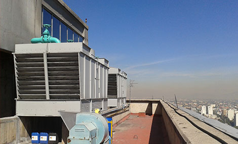
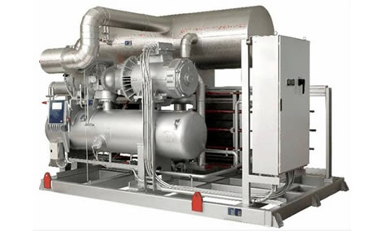
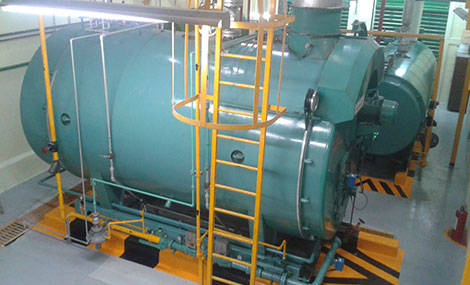
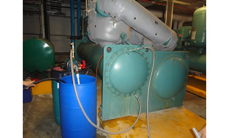
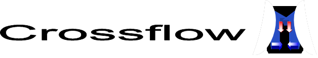

Servicios

Programas de Tratamiento Químico y Microbiológico para Torres de Enfriamiento
- Inhibidores de Incrustación
- Inhibidores de Corrosión
- Biocidas Oxidantes
- Biocidas No oxidantes
- Antiespumantes
- Dispersantes
- Reguladores de pH

Programas de Tratamiento Químico para Generadores de Vapor
- Inhibidores de Incrustación
- Inhibidores de Corrosión
- Dispersantes de Fierro
- Secuestrantes de Oxigeno
- Dispersantes de lodos
- Aminas neutralizantes
- Aminas Fílmicas

Programas de Tratamiento Químico para Circuitos de agua helada
- Inhibidores de Corrosión
- Biocidas No oxidantes

Contamos con gran variedad de equipos para Tratamiento de Agua como son
- Sistemas de Filtración mediante camas múltiples
- Sistemas de Filtración mediante Carbón Activado
- Sistemas de Desmineralización mediante Resinas de Intercambio Iónico
- Sistemas de Desmineralización mediante Osmosis Inversa
- Dosificadores de químicos
- Instrumentos en línea como son pHmetros, Conductimetros, medidores de Dureza, Medidores de Cloro Residual, Indicadores de Presión, Rotámetros

Limpiezas Químicas
Tenemos el respaldo de la Empresa Crossflow México, S.A. DE C.V., dedicada a la venta de refacciones, fabricación, mantenimiento y reparación de Torres de Enfriamiento de cualquier tipo y marca
